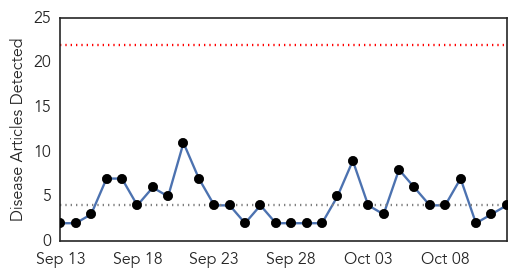
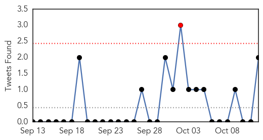
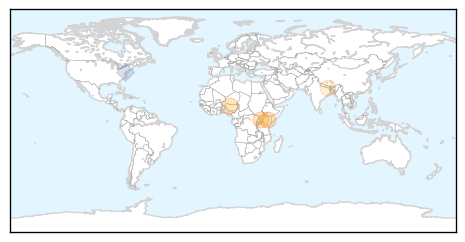
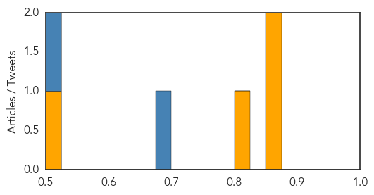

Cholera
30-Day Web Trend
0 alerts, 0 warnings

30-Day Twitter Trend
0 alerts, 1 warnings

Article Locations
Article Confidences
Top Articles:
Top Tweets:
- 0.704
- Preventive health at its best cholera vaccineswork thanks 2 Tanzanian MoH & @MSF_USA @WHO 4 the vaccine stockpile https://t.co/pt5orBdiRb
- 0.691
- RT: Preventive health at its best cholera vaccineswork thanks 2 Tanzanian MoH & @MSF_USA @WHO 4 the vaccine stockpile http…
- 0.648
- RT: Continuing cholera outbreak in Tanzania: http://t.co/m231FHP2VS
Chikungunya
30-Day Web Trend
1 alerts, 0 warnings

30-Day Twitter Trend
2 alerts, 0 warnings

Article Locations

Article Confidences

Top Articles:
Top Tweets:
-
No tweets found for Oct 12, 2015